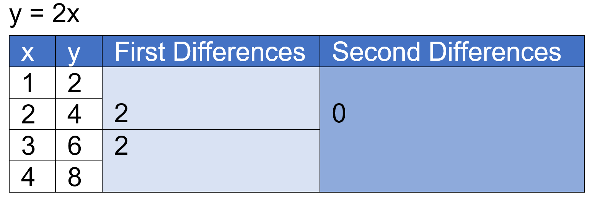

Math Caching
Chapter 4-6 Review
Jump to clue
Non-linear relation - A relationship between two variables that does not follow a straight
line
when
graphed.
Curve of best fit - A smooth curve drawn to approximate the general path or trend in a
scatter
plot.
Independent variable - The variable that you control, usually the x axis.
Dependent variable - The variable that is different depending on the independent variable,
usually the y
axis.
Quadratic equation - An equation in the form \(y=ax^2+bx+c\) where \(a\), \(b\), and \(c\)
are
real numbers and
\(a\neq0\).
Parabola - The graph of quadratic relation, which is U-shaped and symmetrical.
Vertex - The point on the parabola where the cure changes direction, maximum point or
minimum
point depending if
the parabola opens up down or up.
X-intercept/zero - The point where the graph intercepts the x axis. Parabolas have one,
two, or
zero.
Axis of symmetry - The line that divides a figure into two congruent parts.
Finite differences - Differences found from the y-values in a table with evenly spaced
x-values, first
differences are the differences between consecutive y-values, second differences are the difference between
consecutive first differences.

In a quadratic relation the second differences are constant, but the first differences are not.
Take the base graph of \(y=x^2\):
\(y=x^2+k\) - Translates graph k units vertically, if greater than 0, graph is translated upwards, if less
than
0, graph is translated downward.
\(y=ax^2\) - Graph is stretched by a factor of a, if a is negative the graph is reflected on the x axis. If
\(a
> 1\text{ or }a < -1\) then the graph is stretched vertically. If \(-1> a > 0 \text{ or }0 < a < 1\) then the graph is compressed vertically.
\(y=(x-h)^2\) - Translates the graph horizontally, if h is positive then
the graph is translated to the right, if h is negative then the graph is translated to the left.
This can all be expressed in the vertex form: \(a(x-h)^2+k\)
Vertex: (h, k)
Axis of symmetry: \(x=h\)
A quadratic relation in the form \(y=a(x-r)(x-s)\) is the intercept form.
The x intercepts, or zeros are \(r\) and \(s\).
The x coordinate of the vertex is the midpoint between both x intercepts.
When a non-zero number is raised to the exponent 0, the result is 1.
When a non-zero base is raised to a negative exponent, the result is the reciprocal of the base
raised to the positive of the exponent:
\(2^{-3}=\frac{1}{2^3}=\frac{1}{8}\)
The product of two binomials can be found by multiplying each term in binomial by each other,
simplifying if necessary.
Perfect square trinomial - A trinomial in the form \(a^2+2ab+b^2\) or \(a^2-2ab+b^2\) that
is the
result of squaring two binomials, \((a+b)^2\) or \((a-b)^2\).
Difference of squares - When the sun and the difference of two terms are multiplied
\((a+b)(a-b)\),
the answer will be in the form \(a^2-b^2\).
Factoring a polynomial is the opposite of expanding it, you can do so by finding the GCF (greatest
common factor) of all the terms and dividing them by it. The GCF is not limited to being a
monomial.
\(x^2+3x=x(x+3)\)
To factor by grouping, factor groups of two terms with a common factor to create a binomial common
factor, factor that.
\begin{aligned}bx+3x+by+3y&=(bx+3x)+(by+3y)\\
&=x(b+3)+y(b+3)\\
&=(x+y)(b+3)
\end{aligned}
A quadratic expression in the form \(x^2+bx+c\) can be factored by finding two integers whose
product is \(c\), and whose sum is \(b\). Express these terms as a product.
\(x^2+12x+21=(x+3)(x+9)\)
\(3\cdot9=27\)
\(3+9=12\)
Not all quadratic expressions of this form can be factored this way.
A quadratic expression in the form \(ax^2+bx+c\) can be factored by finding two integers whose
product is \(a\cdot c\), and whose sum is \(b\), break up the middle terms into these two integers,
and factor by grouping.
\begin{aligned}
2x^2+6x+4&=2x^2+4x+2x+4\\
&=2x(x+1)+4(x+1)\\
&=(2x+4)(x+1)\\
&=2(x+2)(x+1)
\end{aligned}
\(4\cdot2=8\)
\(4+2=6\)
Not all quadratic expressions of this form can be factored this way.
Quadratic expressions can also be perfect square trinomials, or can be solved with the difference of squares.
Completing the square - The method for changing \(ax^2+bx+c\) into vertex form
\(a(x-h)^2+k\).
\begin{aligned}
y&=2x^2+12x+11\\
&=2(x^2+6x)+11\\
&=2(x^2+6x+3^2-3^2)+11\\
&=2(x^2+6x+3^2)-2(3^2)+11\\
&=2(x+3)^2-7
\end{aligned}
First factor out a from the first two terms, add the square of half of \(b\) and subtract the same
value, take the negative value out of the brackets, and simplify the equation.
To solve a quadratic equation, write it in the form \(ax^2+bx+c=0\), factor the left side and solve each factor for 0, the solutions are also known as the roots.
Some quadratics cannot be solved through factoring, using the quadratic formula you can find the
solutions to a quadratic equation. The quadratic equation can be derived through the following
process.
\begin{align}
ax^2+bc+c&=0\\
x^2+\frac{b}{a}x+\frac{c}{a}&=0\\
x^2+\frac{b}{a}x&=-\frac{c}{a}\\
x^2+\frac{b}{a}x+\left(\frac{b}{2a}\right)^2&=-\frac{c}{a}+\left(\frac{b}{2a}\right)^2\\
\left(x+\frac{b}{2a}\right)^2&=-\frac{c}{a}+\left(\frac{b}{2a}\right)^2\\
x+\frac{b}{2a}&=\pm\sqrt{-\frac{c}{a}+\left(\frac{b}{2a}\right)^2}\\
x&=-\frac{b}{2a}\pm\sqrt{-\frac{c}{a}+\left(\frac{b}{2a}\right)^2}\\
x&=\frac{-{b}\pm\sqrt{-\frac{c}{a}\cdot(2a)^2+\left(\frac{b}{2a}\right)^2\cdot(2a)^2}}{2a}\\
x&=\frac{-{b}\pm\sqrt{b^2-4ac}}{2a}
\end{align}
Start with the quadratic equation
Divide each side by
\(a\)
Move \(\frac{c}{a}\) to the
other side
Add \((\frac{b}{2a})^2\) to each side
Factor the trinomial on the left
side
Square
root
Move \(\frac{b}{2a}\) to the right
Simplify right side by multiplying by
\(\frac{2a}{2a}\)
Simplify
The x-coordinate of the vertex can be found through \(-\frac{b}{2a}\)
The discriminant is the value in the square root of the quadratic formula, it can tell you how many
roots a quadratic equation has. If \(b^2-4ac\) is positive there are two roots, if 0 there is one
root, and if negative there are zero roots.
Some problems can be solved by multiplying two linear expressions together, resulting in a quadratic equation which can be solved in one of the ways detailed above.
Gravitational pull causes objects to have a height-time relationship that is quadratic this can be modelled by: \(h=-\frac{1}{2}gt^2+v_0t+h_0\) where \(g\) is acceleration due to gravity, 9.8 m/s\(^2\) on Earth, \(v_0\) is the initial vertical velocity, \(h_0\) is the initial height in meters, \(t\) is the time in seconds, and \(h\) is the height meters.
Math Caching Clue
-
Find the roots of each equation, input each separately into an answer box rounding to the nearest tenth
if necessary:
a) \(0=(x+3)^2-9\) (2 marks)
b) \(0=x^2+x-12\) (2 marks)
c) \(-7=-3x^2+3x\) (2 marks)
-
Big Wind Turbine repairs wind turbines. They charge $250 for wind turbine repairs and make an average of
25 repairs a year. They
calculate that for every $50 they increase their prices they will lose a customer, what is their optimal
price? How much money will they make? And how many repairs will they make a year? Do not include unit symbols in answer. (8
marks)
1. a)
The roots can be found by isolating \(x\):
\begin{aligned}
9&=(x+3)^2\\
\pm3&=x+3\\
\pm3-3&=x
\end{aligned}
Each answer is a root:
\begin{aligned}
+3-3&=x\\
0&=x
\end{aligned}
\begin{aligned}
-3-3&=x\\
-6&=x
\end{aligned}
(1 mark)
\(∴ \text{The roots of equation}\ 0=(x+3)^2-9\ \text{are}\ 0\ \text{and}\ -6\) (1 mark)
1. b)
The roots can be found by finding two integers whose product is \(c\), and whose sum is \(b\). Express both as a product, and solve \(x\) for each binomial:
\begin{aligned}
0&=x^2+x-12\\
4+(-3)&=1\\
4\cdot(-3)&=(-12)\\\\
(x+4)(x-3)&=0
\end{aligned}
Each answer is a root:
\begin{aligned}
x-3=0\\
x&=3
\end{aligned}
\begin{aligned}
x+4&=0\\
x&=(-4)
\end{aligned}
(1 mark)
\(∴ \text{The roots of equation}\ 0=x^2+x-12\ \text{are}\ 3\ \text{and}\ -4\) (1 mark)
1. c)
Get the equation into the form \(ax^2+bx+c=0\), then solve through the quadratic
formula:
\begin{aligned}
-7&=-3x^2+3x\\
0&=-3x^2+3x+7\\\\
x&=\frac{-{b}\pm\sqrt{b^2-4ac}}{2a}\\
x&=\frac{-{3}\pm\sqrt{3^2-4(-3)(7)}}{2(-3)}\\
x&=\frac{-{3}\pm\sqrt{9+84}}{-6}\\
x&=\frac{-{3}\pm\sqrt{93}}{-6}
\end{aligned}
Each answer is a root:
\begin{aligned}
x&=\frac{-{3}+\sqrt{93}}{-6}\\
x&=-1.1072...
\end{aligned}
\begin{aligned}
x&=\frac{-{3}-\sqrt{93}}{-6}\\
x&=2.1072...
\end{aligned}
(1 mark)
\(∴ \text{The roots of equation}\ -7=-3x^2+3x\ \text{are}\ -1.1\ \text{and}\ -2.1\) (1 mark)
2.
The relation of Big Wind Turbine can be modelled as \(-50(x+5)(x-25)\):
Let \(x\) be the number of customers lost.
Let \(y\) be the total money made.
The number of customers sold to can be modelled as \((-x+25)\).
The cost of each repair can be modelled as 50 times the number of
customers lost plus 250 \((50x+250)\).
Multiply these together and you get a quadratic, simplify:
\begin{aligned}
y&=(50x+250)(-x+25)\\
y&=-50(x+5)(x-25)
\end{aligned}
(2 mark)
The vertex of the parabola will be the amount of repairs made at the optimal price.
Midpoint between \(-5\) and \(25\):
\(\frac{-5+25}{2}=10\)
(1 mark)
Substitute \(x\) for 10 to get the amount of money made:
\begin{aligned}
y&=-50(x+5)(x-25)\\
y&=-50((10)+5)((10)-25)\\
y&=-50(15)(-15)\\
y&=11250
\end{aligned}
(1 mark)
The cost for each repair can be found from \((50x+250)\):
\((50(10)+250)=750\)
(1 mark)
\begin{aligned}
&∴ \text{The optimal price is } $750 \text{, the money made is}\ $11250 \\
&\text{ and the repairs made per year are }10
\end{aligned}
(3 marks)